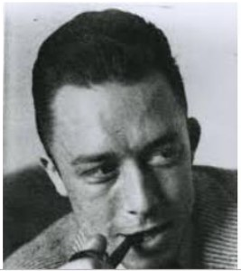

L'éloge des sens!!
Noces à Tipasa
- Tout à l'heure, [...] j'aurais conscience [...] d'accomplir une vérité qui est celle
du soleil et sera aussi celle de ma mort. Dans un sens, c'est bien ma vie que je joue ici. (p.16)
- J'appelle imbécile celui qui a peur de jouir. (p.18)
- A Tipasa, je vois équivaut à je crois. (p.18) Il y a un temps pour vivre, et un temps pour témoigner de vivre. (p.18)
Le vent de Djemila
- Il est des lieux où meurt l'esprit pour que naisse une vérité qui est sa négation même. p.23 (1ère page)
- Djemila: Ce n'est pas une ville où l'on s'arrête et que l'on dépasse. (p.24)
- Par [ma peau], auparavant, je déchiffrais l'écriture du monde. (p.25)
- De la mort et des couleurs, nous ne savons pas discuter. (p.29)
- Toute mon horreur de mourir tient dans ma jalousie de vivre. (p.30)
- Le monde finit toujours par vaincre l'histoire. (p.32)
Extraits de l'oeuvre d'Albert Camus
